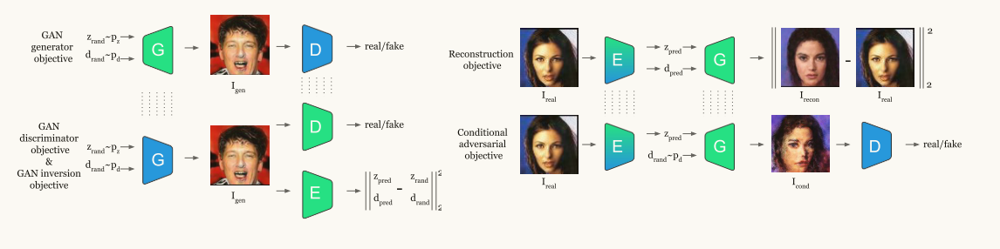
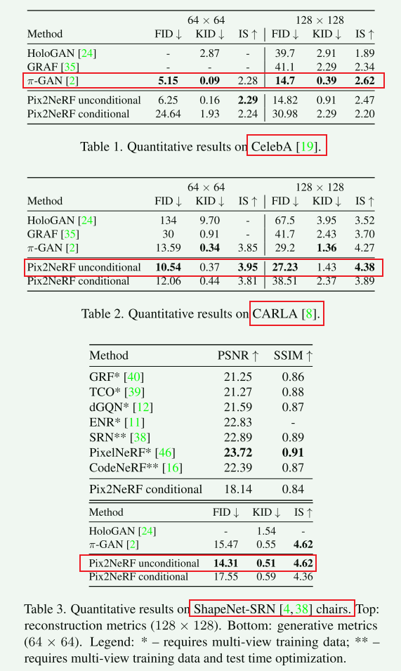

Pix2NeRF_ Unsupervised Conditional π-GAN for Single Image to Neural Radiance Fields Translation
Pix2NeRF: Unsupervised Conditional π-GAN for Single Image to Neural Radiance Fields Translation
1 提出的方法， 贡献，相关工作
1. 方法
基于π-GAN模型，用于无条件3D感知图像合成的生成模型，它讲随机latent code映射到一类对象的辐射场。作者同时优化两个目标: （1）π-GAN目标，以利用其高保真度的3D感知生成能力。（2）一个经过精心设计的重建目标，包括一个与π-GAN生成器耦合的编码器，形成一个自动编码器。
引入了将给定图像映射到latent space的编码器，并对其做了些优化：（1）训练π-GAN和添加的编码器将生成的图像映射回latent space。（2）将编码器与π-GAN的生成器结合形成带条件的GAN模型，同时使用对抗和重建损失对其进行训练。
2. 贡献
（1）提出Pix2NeRF，第一个无监督的单视图NeRF模型，可以从图像中学习场景辐射场，并且不需要3D信息，多视图或者姿态监督。
（2）提出基于NeRF的GAN反演。
3. 相关工作
作者的工作可以分类为特定类别的3D感知神经新视图合成方法，该方法基于NeRF和π-GAN。
- 神经辐射场
- 基于NeRF的GAN
- 少样本NeRF
2 模型与模块
1. 总体架构
Pix2NeRF由三个神经网络组成，一个生成器G、一个辨别器D，共同组成生成对抗网络，一个编码器E，与生成器G共同组成一个自动编码器。
生成器约束：output view pose d and latent code z。
G：生成器，D：辨别器，E：编码器，I：RGB image，z：latent code，d：pose，p：prior distribution l：logit predict distribution。
1.1 Overview
论文中的方法将编码器和生成器输入映射的图像的潜在表示解耦为内容z和姿态d，并对这两个部分进行单独处理。

Pix2NeRF从一张输入的图像中解耦姿态和内容，并且生成一个内容的辐射场，该辐射场包括（1）解耦姿态下的输入一致性，（2）来自\(~p_d~\)不同姿态下的一致性雨逼真性。为了完成这些目标，设计了几个训练目标：
- Generator（生成器）
- Discriminator（辨别器）
- GAN inversion（GAN反演）
- Reconstruction（重建）
- Conditional adversarial training（条件对抗训练）
2. GAN generator objective（GAN生成器）
对latent code \(z_{rand} \sim p_{z}\) 和随机姿态\(d_{rand} \sim p_d\) 成对采样，然后通过生成器去生成假的生成图像：\(I_{gen} ~ = ~ G(z_{rand},~d_{rand})\)，最后输入到冻结的辨别器中：\(l_{gen}, ~ d_{gen} ~ = ~ D^*(I_{gen})\)。（左上）
使用 MSE 作为生成的姿态 \(d_{gen}\) 和随机姿态输入 \(d_{rand}\) 之间的损失函数，同时生成器G的损失函数如下： \[ \begin{aligned} \mathcal{L}_{\mathrm{GAN}}(G)=\underset{\substack{z_{\text {rand }} \sim p_{\mathrm{z}} \\ d_{\text {rand }} \sim p_{d}}}{\mathbb{E}} [\text{softplus}\left(-l_{\text {gen}}\right)+ \left.\lambda_{\text {pos }}\left\|d_{\text {rand }}-d_{\text {gen}}\right\|_{2}^{2}\right] \end{aligned} \] 其中 $ _{pos}$ 为微调权重因子。
3. GAN discriminator objective（GAN辨别器）
对latent code \(z_{rand} \sim p_{z}\) 和随机姿态\(d_{rand} \sim p_d\) 成对采样，然后通过冻结的生成器去生成假的生成图像：\(I_{gen} ~ = ~ G^*(z_{rand},~d_{rand})\)，然后辨别器D通过 \(G^*\) 生成的的图像和真实图像 \(I_{real} \sim p_{real}\) 来进行训练。（左下） \[ l_{real},~ d_{real} ~=~D(I_{real}), \\ l_{gen}, ~ d_{gen} ~=~ D(I_{gen}). \] 考虑已知姿态的 MSE 监督而修改的鉴别器的损失函数 \(\mathcal{L}_{GAN}(D)\) 可以表示为： \[ \begin{aligned} \mathcal{L}_{\mathrm{GAN}}(D)~ = ~\underset{I_{\text {real}} \sim p_{\text {real}}}{\mathbb{E}} {\left[\operatorname{softplus}\left(-l_{\text {real}}\right)\right]~ + ~} \\ \underset{\substack{z_{\text {rand }} \sim p_{\mathrm{z}} \\ d_{\text {rand}} \sim p_{d}}}{\mathbb{E}} {\left[\operatorname{softplus}\left(l_{\text {gen}}\right)~ + ~\right.} \left.\lambda_{\text {pos}}\left\|d_{\text {rand}}-d_{\text {gen}}\right\|_{2}^{2}\right] \end{aligned} \] 其中 $ _{pos}$ 为微调权重因子。
4. GAN inversion objective（GAN反演）
联合优化编码器 E 和辨别器 D，并冻结生成器 G。目的是确保采样的内容和姿态与编码器从生成的图像中提取的内容和姿态之间的一致性。（左下） \[ z_{pred}, ~ d_{pred} ~ = ~E(I_{gen}) \] GAN反演使用 MSE 损失函数： \[ \begin{array}{r} \mathcal{L}_{\mathrm{GAN}^{-1}}(E)=\underset{\substack{z_{\text {rand }} \sim p_{\mathrm{z}} \\ d_{\text {rand }} \sim p_{d}}}{\mathbb{E}}\left[\left\|z_{\text {pred }}-z_{\text {rand }}\right\|_{2}^{2} ~+ ~\right. \left.\left\|d_{\text {pred }}-d_{\text {rand }}\right\|_{2}^{2}\right] \end{array} \] 5. Reconstruction objective（重建）
通过使用编码器 E 提取其 latent code 和姿势预测来在真实图像上调节生成器 G，然后使用预测的姿势渲染其视图，目的为促进图像空间中结构的的一致性，并使得图像更加清晰。（右上） \[ z_{pred}, ~ d_{pred} ~ = ~ E(I_{real}) \\ I_{recon} ~ = ~ G(z_{pred}, ~ d_{pred}) \] 重建损失函数，基于 MSE 改进： \[ \begin{array}{r} \mathcal{L}_{\text {recon }}(G, E)=\underset{\begin{array}{c} {I_{real} } \sim { p_{real} } \end{array}}{\mathbb{E}}\left[\left\|I_{\text {recon }}-I_{\text {real }}\right\|_{2}^{2} ~ + ~\right. \\ \lambda_{\text {ssim }} \mathcal{L}_{\text {ssim }}\left(I_{\text {recon }}, I_{\text {real }}\right) ~ + \\ \left.\lambda_{\text {vgg }} \mathcal{L}_{\text {vgg }}\left(I_{\text {recon }}, I_{\text {real }}\right)\right] \end{array} \] 其中 \(\mathcal{L}_{ssim}\) 为SSIM损失，\(\lambda_{ssim}\) 为SSIM损失的权重因子；\(\mathcal{L}_{vgg}\) 为 VGG 感知损失，\(\lambda_{vgg}\) 为其权重因子。
6. Conditional adversarial objective（条件对抗网络）
重建目标旨在提高由编码器E提取的单个视图的良好重建质量。这可能会导致网络组合趋向于预测微不重要的姿势，或者对从 \(p_d\) 提取的其他姿势的重建进行不切实际的预测。为了缓解这一问题，当生成器在随机姿势下渲染出图像 \(I_{real}\) 时，进一步应用对抗目标。 \[ l_{cond}, ~ d_{cond} ~=~D^*(G(z_{pred}, ~d_{rand})) \] 损失函数为： \[ \mathcal{L}_{cond}(G, ~E) ~=~ \underset{\substack{\substack{I_{real}\sim p_{real}} \\ d_{rand} \sim p_d}}{\mathbb{E}} \left[\operatorname{softplus}(-l_{cond}) \right] \] 7. Encoder warm-up（编码器预热）
重建损失可能很容易占主导地位，导致模型过度拟合于输入视图，同时失去了表示3D的能力。因此，作者引入了一种简单的“预热”策略来应对这个问题。在训练协议的前半部分迭代中，冻结编码器，同时优化重建和条件对抗损失，并且仅优化生成器用于这两个目标。这作为生成器的预热，大致学习编码器输出与编码图像之间的对应关系。然后解冻编码器，使其能够进一步提炼其学习到的表示。在预热阶段之后，编码器和生成器直接形成了一个经过预训练的自动编码器，能够生成接近真实3D表示的结果，避免了繁琐的早期重建目标，这在与GAN目标相平衡非常困难的情况下尤为重要。作者通过消融研究展示了这一策略的必要性，并与仅为重建损失分配较小权重的情况进行了比较。
8. Training and Inference（训练与推测）
判别器和 GAN 反演目标在每次迭代时都会进行优化；GAN 生成器目标在偶次迭代时进行优化；重建和条件对抗目标在奇数迭代期间通过加权因子 \(λrecon\) 联合优化： \[ \mathcal{L}_{odd} ~=~ \mathcal{L}_{cond} ~ + ~ \lambda_{recon}\mathcal{L}_{recon} \] 在推理阶段，Pix2NeRF 只需要一个输入图像，可以将其输入编码器 E，然后输入生成器 G，再加上任意选择的姿势以进行新颖的视图合成。同时，可以从先验分布 \(p_z\) 中对其进行采样，而不是从编码器中获取 latent code z，以使模型像 π-GAN 一样合成新颖的样本。
3 实验
1.数据集
CelebA：200k张==人脸照片==，使用==aligned==的版本，并且采用中心裁剪，裁剪出大致脸部面积，使用8k张照片作为测试集。
CARLA：包含 16 个==汽车模型==的 10k 图像，使用 Carla 驾驶模拟器以随机纹理渲染。
ShapeNet-SRN：该数据集包含来自 ShapeNet 的 50 个渲染视图，其中每个实例都有阿基米德螺旋相机姿势。由于 ShapeNet-SRN 数据集的验证和测试集中不包括下半球，因此作者过滤训练集以仅包含上半球。作者使用==椅子==分割来与之前的多视图方法进行比较。
2.技术细节
baseline：==π-GAN（Pytorch）==,重用其生成器和鉴别器架构。
参数：选择 latent code 先验分布 \(p_z\) 作为 [-1, 1] 上的多元均匀分布。使用鉴别器架构作为编码器主干，并且在latent code 头部的末尾添加==tanh==，所有的模型使用Adam优化器进行300k迭代。CelebA模型在==resolution=64×64，batch size=48==，每条射线采样24个点的参数下进行训练，其辨别器、生成器、编码器的学习率分别为==2e-4,6e-5,2e-4==。对于其他模型在==resolution=32×32==，每条射线采样96个点的参数下进行训练，学习率分别为==4e-5,4e-4,4e-4==.
3.结果对比

4.消融实验
通过逐个去除关键组件并在完整模型相同的设置下训练模型，来验证设计选择。
主要对比的模型组件有：==Naive GAN inversion, Auto-encoder, No GAN inversion, No conditional adversarial objective, Warm-up==
Naive GAN inversion:在朴素的GAN反演中，使用一个预先训练好的GAN，冻结其权重，并训练一个编码器将图像映射到它们对应的 latent code。结果表明，编码器可以学习从图像到 latent code 的近似映射。
Auto-encoder:利用 π-GAN 的架构作为自动编码器，并将==latent space==从pipeline中删除，只训练重建和条件对抗模型。得到的结果虽然又不错的质量，但是明显能观察到3D不一致现象。
No GAN inversion:将==GAN inversion==从pipeline中删除之后，视觉结果变得模糊。这一步可能是 π-GAN 训练和重建之间的联系，影响整体性能。
No conditional adversarial objective: 停用条件对抗损失并重新训练，导致渲染变得不完整，有明显的伪影，并且一致性降低。
Warm-up:分别训练三个模型，==没有warm-up，没有unfreezing编码器（始终预热），为重建分配较低的权重而不是预热==。没有warm-up策略，导致过拟合输入视图，并且无法在新颖姿态中产生有意义的内容；没有解冻编码器，则蒸馏相对弱，导致细节很少；使用较低的重建权重而不是预热，使新试图合成的模式崩溃。
4 其他
- 利用 2D GAN 前馈反转等更成熟的编码器架构，例如Pixel2style，可能会显着提高 Pix2NeRF 的性能。